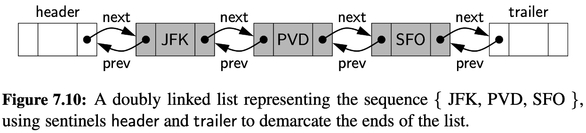
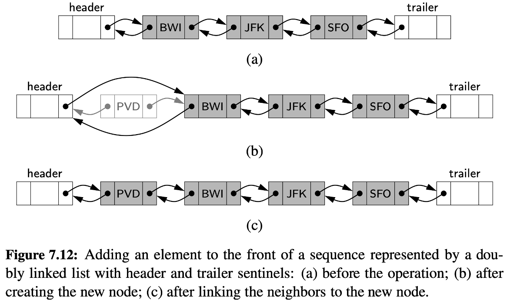

<!DOCTYPE html>
<html lang="en">
  <head>
    <meta charset="utf-8" />
    <meta name="viewport" content="width=device-width, initial-scale=1.0, maximum-scale=1.0, user-scalable=no" />

    <title></title>
    <link rel="stylesheet" href="dist/reveal.css" />
    <link rel="stylesheet" href="dist/theme/iph.css" id="theme" />
    <link rel="stylesheet" href="plugin/highlight/spyder.css" />
	<link rel="stylesheet" href="css/layout.css" />
	<link rel="stylesheet" href="plugin/customcontrols/style.css">


    <script defer src="dist/fontawesome/all.min.js"></script>

	<script type="text/javascript">
		var forgetPop = true;
		function onPopState(event) {
			if(forgetPop){
				forgetPop = false;
			} else {
				parent.postMessage(event.target.location.href, "app://obsidian.md");
			}
        }
		window.onpopstate = onPopState;
		window.onmessage = event => {
			if(event.data == "reload"){
				window.document.location.reload();
			}
			forgetPop = true;
		}

		function fitElements(){
			const itemsToFit = document.getElementsByClassName('fitText');
			for (const item in itemsToFit) {
				if (Object.hasOwnProperty.call(itemsToFit, item)) {
					var element = itemsToFit[item];
					fitElement(element,1, 1000);
					element.classList.remove('fitText');
				}
			}
		}

		function fitElement(element, start, end){

			let size = (end + start) / 2;
			element.style.fontSize = `${size}px`;

			if(Math.abs(start - end) < 1){
				while(element.scrollHeight > element.offsetHeight){
					size--;
					element.style.fontSize = `${size}px`;
				}
				return;
			}

			if(element.scrollHeight > element.offsetHeight){
				fitElement(element, start, size);
			} else {
				fitElement(element, size, end);
			}		
		}


		document.onreadystatechange = () => {
			fitElements();
			if (document.readyState === 'complete') {
				if (window.location.href.indexOf("?export") != -1){
					parent.postMessage(event.target.location.href, "app://obsidian.md");
				}
				if (window.location.href.indexOf("print-pdf") != -1){
					let stateCheck = setInterval(() => {
						clearInterval(stateCheck);
						window.print();
					}, 250);
				}
			}
	};


        </script>
  </head>
  <body>
    <div class="reveal">
      <div class="slides"><section  data-markdown><script type="text/template"><!-- .slide: class="has-light-background drop" data-background-color="#f8f8f8" -->
<div class="" style="position: absolute; left: 0px; top: 0px; height: 700px; width: 960px; min-height: 700px; display: flex; flex-direction: column; align-items: center; justify-content: center" absolute="true">

### Estructuras de Datos y Algoritmos

#### *Estructuras de Datos Lineales V*

[Eduardo Rosales](mailto:ee.rosales24@uniandes.edu.co)

Departamento de Ingeniería de Sistemas y Computación

Universidad de los Andes
</div></script></section><section  data-markdown><script type="text/template"><!-- .slide: class="has-light-background drop" data-background-color="#f8f8f8" -->
<div class="" style="position: absolute; left: 0px; top: 0px; height: 700px; width: 960px; min-height: 700px; display: flex; flex-direction: column; align-items: center; justify-content: center" absolute="true">

### Implementación de una Lista doblemente enlazada - Double Linked List
</div></script></section><section  data-markdown><script type="text/template"><!-- .slide: class="has-light-background drop" data-background-color="#f8f8f8" -->
<div class="" style="position: absolute; left: 0px; top: 0px; height: 700px; width: 960px; min-height: 700px; display: flex; flex-direction: column; align-items: center; justify-content: center" absolute="true">

### Doble enlazamiento (repaso)


</div></script></section><section  data-markdown><script type="text/template"><!-- .slide: class="has-light-background drop" data-background-color="#f8f8f8" -->
<div class="" style="position: absolute; left: 0px; top: 0px; height: 700px; width: 960px; min-height: 700px; display: flex; flex-direction: column; align-items: center; justify-content: center" absolute="true">

### `new_double_node()`

```python
def new_double_node(element):
    """
    Crea un nodo para una lista doblemente enlazada.

    El nodo contiene:
    - info: Información almacenada en el nodo.
    - next: Referencia al siguiente nodo, inicializada en None.
    - prev: Referencia al nodo anterior, inicializada en None.

    :param element: Elemento del nodo.
    :type element: any

    :return: Nodo recién creado.
    :rtype: dict que representa a un nodo en una lista doblemente enlazada.
    """
    return {"info": element, "next": None, "prev": None}
```

- Cada nodo es un diccionario
	- Con parejas llave-valor que modelan:
		- Los datos: 
			- `"info"`
		- Las referencias al siguiente y al anterior nodo: 
			- `"next"`
			- `"prev"`
	- Complejidad: 
		- &shy;<!-- .element: class="fragment" data-fragment-index="1" -->O(1)
</div></script></section><section  data-markdown><script type="text/template"><!-- .slide: class="has-light-background drop" data-background-color="#f8f8f8" -->
<div class="" style="position: absolute; left: 0px; top: 0px; height: 700px; width: 960px; min-height: 700px; display: flex; flex-direction: column; align-items: center; justify-content: center" absolute="true">

### Operaciones básicas
</div></script></section><section  data-markdown><script type="text/template"><!-- .slide: class="has-light-background drop" data-background-color="#f8f8f8" -->
<div class="" style="position: absolute; left: 0px; top: 0px; height: 700px; width: 960px; min-height: 700px; display: flex; flex-direction: column; align-items: center; justify-content: center" absolute="true">

### `new_double_list()`

```python
def new_double_list():
    """
    Crea una lista doblemente enlazada vacía con nodos centinela.

    :return: Lista vacía recién creada.
    :rtype: dict que representa una lista doblemente enlazada.
    """
    header = {"info": None, "next": None, "prev": None}  # Nodo centinela inicial
    trailer = {"info": None, "next": None, "prev": header}  # Nodo centinela final
    header["next"] = trailer

    return {"header": header, "trailer": trailer, "size": 0}
```

- Complejidad: 
	- &shy;<!-- .element: class="fragment" data-fragment-index="1" -->O(1)
</div></script></section><section  data-markdown><script type="text/template"><!-- .slide: class="has-light-background drop" data-background-color="#f8f8f8" -->
<div class="" style="position: absolute; left: 0px; top: 0px; height: 700px; width: 960px; min-height: 700px; display: flex; flex-direction: column; align-items: center; justify-content: center" absolute="true">

### `is_empty()` y `size()`

```python
def is_empty(my_list):
    """
    Verifica si la lista doblemente enlazada está vacía.
    """
    return my_list["size"] == 0


def size(my_list):
    """
    Retorna el tamaño de la lista doblemente enlazada.
    """
    return my_list["size"]
```

- Complejidad de ambas funciones: 
	- &shy;<!-- .element: class="fragment" data-fragment-index="1" -->O(1)
</div></script></section><section  data-markdown><script type="text/template"><!-- .slide: class="has-light-background drop" data-background-color="#f8f8f8" -->
<div class="" style="position: absolute; left: 0px; top: 0px; height: 700px; width: 960px; min-height: 700px; display: flex; flex-direction: column; align-items: center; justify-content: center" absolute="true">

### Inserción al inicio


</div></script></section><section  data-markdown><script type="text/template"><!-- .slide: class="has-light-background drop" data-background-color="#f8f8f8" -->
<div class="" style="position: absolute; left: 0px; top: 0px; height: 700px; width: 960px; min-height: 700px; display: flex; flex-direction: column; align-items: center; justify-content: center" absolute="true">

### `add_first()`

```python
def add_first(my_list, element):
    """
    Agrega un elemento al inicio de la lista doblemente enlazada.

    :param my_list: Lista a la cual se agregará el elemento.
    :type my_list: dict que representa una lista doblemente enlazada.
    :param element: Elemento a agregar.
    :type element: any.

    :return: Lista con el elemento agregado.
    :rtype: dict que representa una lista doblemente enlazada.
    """
```
</div></script></section><section  data-markdown><script type="text/template"><!-- .slide: class="has-light-background drop" data-background-color="#f8f8f8" -->
<div class="" style="position: absolute; left: 0px; top: 0px; height: 700px; width: 960px; min-height: 700px; display: flex; flex-direction: column; align-items: center; justify-content: center" absolute="true">

### `add_first()` - Caso lista vacía

```python
    >>> my_list = new_double_list()
    >>> add_first(my_list, 10) is not None  # Caso lista vacía
    True
    >>> my_list["header"]["next"]["info"] == 10
    True
    >>> my_list["trailer"]["prev"]["info"] == 10
    True
    >>> my_list["size"] == 1
    True
```
</div></script></section><section  data-markdown><script type="text/template"><!-- .slide: class="has-light-background drop" data-background-color="#f8f8f8" -->
<div class="" style="position: absolute; left: 0px; top: 0px; height: 700px; width: 960px; min-height: 700px; display: flex; flex-direction: column; align-items: center; justify-content: center" absolute="true">

### `add_first()` - Caso agregar un segundo elemento

```python
    >>> add_first(my_list, 30) is not None  # Caso agregar un 2do elemento
    True
    >>> my_list["header"]["next"]["info"] == 30
    True
    >>> my_list["header"]["next"]["next"]["info"] == 10
    True
    >>> my_list["trailer"]["prev"]["info"] == 10
    True
    >>> my_list["size"] == 2
    True
```

- Este doctest es cumulativo con el anterior
	- `my_list` ya tenía al elemento con `info = 10`
</div></script></section><section  data-markdown><script type="text/template"><!-- .slide: class="has-light-background drop" data-background-color="#f8f8f8" -->
<div class="" style="position: absolute; left: 0px; top: 0px; height: 700px; width: 960px; min-height: 700px; display: flex; flex-direction: column; align-items: center; justify-content: center" absolute="true">

### `add_first()` - Caso agregar un tercer elemento

```python
    >>> add_first(my_list, 40) is not None  # Caso agregar un 3er elemento
    True
    >>> my_list["header"]["next"]["info"] == 40
    True
    >>> my_list["header"]["next"]["next"]["info"] == 30
    True
    >>> my_list["header"]["next"]["next"]["next"]["info"] == 10
    True
    >>> my_list["trailer"]["prev"]["info"] == 10
    True
    >>> my_list["trailer"]["prev"]["prev"]["info"] == 30
    True
    >>> my_list["trailer"]["prev"]["prev"]["prev"]["info"] == 40
    True
    >>> my_list["size"] == 3
    True
```

- Este doctest es cumulativo con el anterior
	- `my_list` ya tenía dos elementos con
		- `info = 10` 
		- `info = 30`
</div></script></section><section  data-markdown><script type="text/template"><!-- .slide: class="has-light-background drop" data-background-color="#f8f8f8" -->
<div class="" style="position: absolute; left: 0px; top: 0px; height: 700px; width: 960px; min-height: 700px; display: flex; flex-direction: column; align-items: center; justify-content: center" absolute="true">

### `add_first()` (1/2)

```python
def add_first(my_list, element):
    """
    Agrega un elemento al inicio de la lista doblemente enlazada.

    :param my_list: Lista a la cual se agregará el elemento.
    :type my_list: dict que representa una lista doblemente enlazada.
    :param element: Elemento a agregar.
    :type element: any.

    :return: Lista con el elemento agregado.
    :rtype: dict que representa una lista doblemente enlazada.
    """
    new_node = new_double_node(element)

    new_node["next"] = my_list["header"]["next"]
    new_node["prev"] = my_list["header"]
    my_list["header"]["next"]["prev"] = new_node
    my_list["header"]["next"] = new_node

    my_list["size"] += 1

    return my_list
```
</div></script></section><section  data-markdown><script type="text/template"><!-- .slide: class="has-light-background drop" data-background-color="#f8f8f8" -->
<div class="" style="position: absolute; left: 0px; top: 0px; height: 700px; width: 960px; min-height: 700px; display: flex; flex-direction: column; align-items: center; justify-content: center" absolute="true">

### `add_first()` (2/2)

```python
import doctest

def add_first(my_list, element):
    """
    Agrega un elemento al inicio de la lista doblemente enlazada.

    :param my_list: Lista a la cual se agregará el elemento.
    :type my_list: dict que representa una lista doblemente enlazada.
    :param element: Elemento a agregar.
    :type element: any.

    :return: Lista con el elemento agregado.
    :rtype: dict que representa una lista doblemente enlazada.

    >>> my_list = new_double_list()
    >>> add_first(my_list, 10) is not None  # Caso lista vacía
    True
    >>> my_list["header"]["next"]["info"] == 10
    True
    >>> my_list["trailer"]["prev"]["info"] == 10
    True
    >>> my_list["size"] == 1
    True

    >>> add_first(my_list, 30) is not None  # Caso agregar un 2do elemento
    True
    >>> my_list["header"]["next"]["info"] == 30
    True
    >>> my_list["header"]["next"]["next"]["info"] == 10
    True
    >>> my_list["trailer"]["prev"]["info"] == 10
    True
    >>> my_list["size"] == 2
    True

    >>> add_first(my_list, 40) is not None  # Caso agregar un 3er elemento
    True
    >>> my_list["header"]["next"]["info"] == 40
    True
    >>> my_list["header"]["next"]["next"]["info"] == 30
    True
    >>> my_list["header"]["next"]["next"]["next"]["info"] == 10
    True
    >>> my_list["trailer"]["prev"]["info"] == 10
    True
    >>> my_list["trailer"]["prev"]["prev"]["info"] == 30
    True
    >>> my_list["trailer"]["prev"]["prev"]["prev"]["info"] == 40
    True
    >>> my_list["size"] == 3
    True
    """
    new_node = new_double_node(element)

    new_node["next"] = my_list["header"]["next"]
    new_node["prev"] = my_list["header"]
    my_list["header"]["next"]["prev"] = new_node
    my_list["header"]["next"] = new_node

    my_list["size"] += 1

    return my_list

doctest.run_docstring_examples(add_first, globals(), verbose=True)
```

- Complejidad: 
	- &shy;<!-- .element: class="fragment" data-fragment-index="1" -->O(1)
</div></script></section><section  data-markdown><script type="text/template"><!-- .slide: class="has-light-background drop" data-background-color="#f8f8f8" -->
<div class="" style="position: absolute; left: 0px; top: 0px; height: 700px; width: 960px; min-height: 700px; display: flex; flex-direction: column; align-items: center; justify-content: center" absolute="true">

<br>
<br>


[<i class="fas fa-home  fa-3x"></i>](https://eerosales24.github.io/eda_2025_20/#)
</div></script></section></div>
    </div>

    <script src="dist/reveal.js"></script>

    <script src="plugin/markdown/markdown.js"></script>
    <script src="plugin/highlight/highlight.js"></script>
    <script src="plugin/zoom/zoom.js"></script>
    <script src="plugin/notes/notes.js"></script>
    <script src="plugin/math/math.js"></script>
	<script src="plugin/mermaid/mermaid.js"></script>
	<script src="plugin/chart/chart.min.js"></script>
	<script src="plugin/chart/plugin.js"></script>
	<script src="plugin/customcontrols/plugin.js"></script>

    <script>
      function extend() {
        var target = {};
        for (var i = 0; i < arguments.length; i++) {
          var source = arguments[i];
          for (var key in source) {
            if (source.hasOwnProperty(key)) {
              target[key] = source[key];
            }
          }
        }
        return target;
      }

	  function isLight(color) {
		let hex = color.replace('#', '');

		// convert #fff => #ffffff
		if(hex.length == 3){
			hex = `${hex[0]}${hex[0]}${hex[1]}${hex[1]}${hex[2]}${hex[2]}`;
		}

		const c_r = parseInt(hex.substr(0, 2), 16);
		const c_g = parseInt(hex.substr(2, 2), 16);
		const c_b = parseInt(hex.substr(4, 2), 16);
		const brightness = ((c_r * 299) + (c_g * 587) + (c_b * 114)) / 1000;
		return brightness > 155;
	}

	var bgColor = getComputedStyle(document.documentElement).getPropertyValue('--r-background-color').trim();
	var isLight = isLight(bgColor);

	if(isLight){
		document.body.classList.add('has-light-background');
	} else {
		document.body.classList.add('has-dark-background');
	}

      // default options to init reveal.js
      var defaultOptions = {
        controls: true,
        progress: true,
        history: true,
        center: true,
        transition: 'default', // none/fade/slide/convex/concave/zoom
        plugins: [
          RevealMarkdown,
          RevealHighlight,
          RevealZoom,
          RevealNotes,
          RevealMath.MathJax3,
		  RevealMermaid,
		  RevealChart,
		  RevealCustomControls,
        ],


    	allottedTime: 120 * 1000,

		mathjax3: {
			mathjax: 'plugin/math/mathjax/tex-mml-chtml.js',
		},
		markdown: {
		  gfm: true,
		  mangle: true,
		  pedantic: false,
		  smartLists: false,
		  smartypants: false,
		},

		mermaid: {
			theme: isLight ? 'default' : 'dark',
		},

		customcontrols: {
			controls: [
			]
		},
      };

      // options from URL query string
      var queryOptions = Reveal().getQueryHash() || {};

      var options = extend(defaultOptions, {"width":960,"height":700,"margin":"0.025","minScale":"0.1","maxScale":"2.0","controls":"true","controlsLayout":"bottom-right","progress":"true","slideNumber":"true","center":"false","transition":"slide","transitionSpeed":"default"}, queryOptions);
    </script>

    <script>
      Reveal.initialize(options);
    </script>
  </body>

  <!-- created with Advanced Slides -->
</html>
